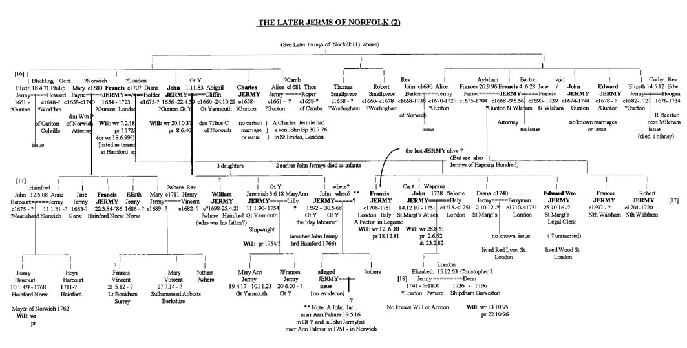

The immediately foregoing account (of the Bayfield Jermys and their involvement with Isaac Preston) covers roughly the period 1750 to 1800 - in particular following the end of the Bayfield line with the death of William Jermy in 1752 and the various agreements and litigations of the 1750s and '60s. Then, after the deaths of Frances Michell and her Preston relatives later that century, the quiet usurpation of the Jermy estate followed in 1791. If anyone was to appear as suggested and query the basis of the Preston's eventual acquisition of the estate, it wouldn't be until after, say, 1800 - as discussed further below.
In the meantime, we may return to the period just before all this - to when the younger John Jermy of Yarmouth (of the Gunton line) was presumably first informed that he had been left a small bequest by his distant 'cousin' William of Bayfield - on the latter's death in early 1752. This news was probably conveyed to him by a closer and younger cousin - Jermy Harcourt (born Jan 1709) - a grandson of Francis Jermy (1654-1723), formerly of Gunton, later of Hayford and latterly of London, and son of the latter man's daughter Anne (nee Jermy) - John's first cousin - who had married John Harcourt in Haynford in May 1708. Their son Jermy Harcourt was an educated man who would become a Mayor of Norwich and was (I believe) an executor of William's Will. It would be one of his responsibilities to see that any such bequests were fulfilled. We may assume that John was still living in Yarmouth at that time (his place of abode being so named in the Will). Moreover, he had been left his father's dwelling house there in the latter's Will of a decade or so earlier and appears to have remained there until about 1754, at least, and quite possibly until his own death there in 1768.
The other Gunton Jermy still alive that year was, as mentioned, Francis Jermy, Gent, the aged Attorney of North Walsham, son of Rev Anthony of Gunton. He was now a remarkable 86 years old - ie 'ancient' - as often termed in those days - when to reach 75 or so was not that common. He too had been left a token sum in William's Will in 1752. Isaac Preston had then given attention firstly to possible claims on the estate by the Mallisons. But he must have soon realised that while the 'nearest in blood' proviso shielded him from some of their probable demands, it could still spell problems in the future - under certain circumstances. He would have to block these as well and preferably at their source.
Although one of these potential Gunton claimants (Francis of North Walsham) had no heirs and would likely soon be dead, he could still prove useful to Isaac. Thus, he decided to offer him a small amount of money (£20) if he would in effect 'sell' his rights to any share in the Jermy estate - if he ever became entitled to same. Now, Francis was most unlikely to still be practising as an Attorney at his elderly age and such a sum (on which, surprisingly, one could live quite well for a year or two at that time) would probably look attractive to him. So he (apparently) signed a 'witnessed' document to this effect - presumably without asking questions as to why Isaac would even consider that he, such an elderly man, might ever be such a claimant. But had he asked, it is unlikely that Isaac would have told him that, armed with this signed document - from an educated relative, and an Attorney at that, he could now more confidently approach another, but younger, Gunton descendent - the younger John Jermy in Yarmouth who was apparently illiterate - and offer him this same deal. And so later that same year John did also (allegedly) sign a very similarly worded document - also witnessed. To ensure the legality of these two agreements, Isaac then had copies enrolled in Chancery in London (dated 1754) - where they have remained (in the PRO) to this day. He would then have blocked both the Mallison and Jermy potential claims.
The two documents (Indentures) concerned are held in the PRO as Closed Rolls which enroll in Chancery (for public record) various transactions whereby eg property is transferred or rights to same sold - often by 'Bargain and Sale' - which was the case here. The first one concerning the Attorney Francis - C54/5948 (11) - reads as follows: "This Indenture made the 13 April 1754 between Francis Jermy of North Walsham, Gent, son and heir of Anthony Jermy of Gunton, Norfolk, Clerk, deceased, of the One Part, and Isaac Preston of Norwich, Esq, of the other Part, (witnesses that)...Whereas William Jermy, late of Bayfield, Esq, did by his last Will and Testament dated 12 Dec 1751 Give and Devise all his Manors, lands, etc (after the determination of several intermediate Contingents and other Estates thereof so limited - ie that left them in the first instant to Frances for life and then to certain named Preston relatives of this sister - and only then (when these don't apply)...'to the use of such male person of the name of Jermy as should the nearest related to him (William) in blood, and to his heirs and assigns forever'...And ...Whereas the said Francis Jermy is become entitled to the said Remainder of the said Manors, etc (after the said determinations) - as being the male person of the name Jermy nearest related in blood to the Testator - that is, to say 'as heir to his said father Anthony, the 2nd surviving son of Francis Jermy, the elder brother of Robert Jermy of Bayfield, the great-great-grandfather of the said William the Testator, there being no other surviving male descendent of the said Robert or his heirs but William - who died on or about the 21 Jan 175 1/2...And Now this Indenture witnesseth that the said Francis Jermy for and in consideration of £20 to him paid in hand by the said Isaac Preston (the receipt whereof the said Francis doth hereby acknowledge) hath 'Granted, Bargained and Sold unto the said Isaac Preston, his heirs and assigns, all those the said Manors of Bayfield, Glanfield, Stanfield, Tasburgh, etc with their rents, profits, rights and all other of William Jermy's estates and lands...". That is, all the properties to which Francis would become so entitled, under the right circumstances - when the present tense of the verb 'is entitled' could be said eventually to correctly apply - ie at some theoretical time in the future. The last mentioned 'other estates' were described as including those in Gunton, Suffield, Felmington, Antingham, Forncett, etc. These must have been included in the rare event that William might somehow have also inherited these as well - although they had in fact mostly been sold by Francis Jermy of Gunton (later of Haynford) and his mother Ann, decades before. Isaac Preston left no stone unturned - even including Forncett, anciently owned by the Jermys!
Francis Jermy of North Walsham then apparently signed the original of this document, as did two witnesses - Sarah Bliss (this surname noted in the Gunton area) and a John Marshall. It seems that it was then retained by Isaac Preston and a copy made of same - to be enrolled in Chancery. The copy seen at the PRO thus included copies of the originals of the foregoing signatures (in the case of John Marshall as 'Jno Marshall'). Before being enrolled, the following statement was then added to the copy - after the person selling their 'entitlement' (in this case) - fulfilled the requirement set out thus: "And be it remembered that on the 30 Apr 1754, the aforesaid Frances Jermy came before our Lord the King in his Chancery and acknowledged the aforesaid Indenture - which was then Enrolled - on 30 May 1754." [It is of course possible that this statement also appeared on the original.]
I've seen the phrase '...came before our Lord the King in his Chancery...' before (ie in relation to a Patent application) and believe that 'the King' was in fact only represented there - by some legal deputy. One assumes, however, that this latter aspect was always done in London (where the Chancery Courts were located) - which would in the present case necessite a very lengthy (and unlikely) journey by our aged vendor. However, this may need further consideration after we examine the next Indenture concerned in this same matter (ie could there possibly be a regional Court that serves this purpose?). Sometime later during that summer of 1754, Isaac Preston must either have had further thoughts about his 'scheme' or it was a part of his original plan. In any case, he decided he must approach one other of the three surviving Norfolk Jermys - who could in practice have potential entitlement to William's estates.
A second Bargain and Sale Agreement was thus drawn up - with very similar wording - becoming file number C54/5949(5). This one reads: "This Indenture - made the 19 Sept 1754 between John Jermy of Gt Yarmouth, Norfolk, surviving son and heir of John Jermy of Gt Yarmouth, Landwaiter, deceased, of the One Part and Isaac Preston of Norwich, Esq, of the Other Part - (witnesseth that)...Whereas William Jermy, late of Bayfield, Esq, did by his last Will and Testament dated 12 Dec 1751 Give and Devise all his Manors, lands, etc (after the determination of several intermediate Contingents and other Estates thereof so limited - (ie that left them in the first instant to Frances for life and then to certain named Preston relatives of this sister and, only then (when these don't apply)...to the use of such male person of the name of Jermy as should be nearest related to him in blood, and to his heirs and assigns forever'...And...Whereas the said John Jermy is become entitled to the said Remainder of the said Manors, etc (after the said determinations) - as being the male person of the name Jermy nearest related in blood to the Testator - that is, to say 'as heir to his said father John, the 2nd son of John Jermy and Anne Castelton his wife, and grandson of Francis Jermy of Gunton , the elder brother of Robert Jermy of Bayfield, the great-great-grandfather of the said William the Testator, there being no other surviving male descendent of the said Robert or his heirs but William - who died on or about the 21 Jan 175 1/2...Or of Francis Jermy of Haynford, Norfolk, Esq, the elder brother of the said John Jermy, Landwaiter, father of the said John Jermy...And Now this Indenture witnesseth that the said John Jermy for and in consideration of £20 to him paid in hand by the said Isaac Preston (the receipt whereof the said John doth hereby acknowledge) hath... 'Granted, Bargained and Sold unto the said Isaac Preston, his heirs and assigns, all those the said Manors of Bayfield, Glanfield, Stanfield, Tasburgh, etc with their rents, profits, rights and all other of William Jermy's estates and lands (ie in Gunton, Suffield, Felmington, Antingham, Forncett, etc...)".
Again, John Jermy then allegedly signed the original of this document, as again did two witnesses - Bracey Taylor and William Moore (these being names noted in Yarmouth). Again, the original was then kept by Isaac Jermy presumably and a copy made - to be enrolled in Chancery after the following was added: "Be it remembered that on the 20 Sept 1754 (the very next day!?), the aforesaid John Jermy came before our Lord King in his Chancery and acknowledged the aforesaid Indenture - which was then Enrolled - 26 Oct 1754." The copy of John Jermy's signature thereon was written 'Jno Jermy' - seemingly by the same legal scribe who had also written 'Jno' - as the abbreviation of 'John' in 'John Marshall'- a witness of Francis Jermy's earlier 'sale'.
Below this was written: "The name 'John Jermy' was written upon erasures throughout - on account of a misnomer." These erasures, seemingly made on both the original and its copy, were clearly apparent in the PRO copy seen.
This latter addition may have implied that Isaac had given the compiler of this second intended Indenture (ie in the summer of 1754) a copy of the one used earlier in the spring to compile Francis's (or even its original) - to copy the essence of it for this second virtually identical 'sale' - but that he then did so too literally - wrongly leaving Francis's name in situ throughout - which thus required erasures (ie in both the original and copy of that second version). OR, did Isaac have the latter made out initially in respect of John's elder brother Jeremiah (ie in early summer, say) and then have to have it changed after learning of his recent (convenient) death - say in August? It should be noted that it was the copy of that second version - yet to be enrolled - that required the erasures of whatever name was shown in it initially - and then replaced with that of John's name. That initial second version copy (with its copied signatures as well) must therefore have copied the previous names and signatures throughout - as shown already on the original of that second Indenture - complied in late summer, 1754. Whose name and signature was on it therefore? In any case, it is believed that John Jermy was illiterate. Not only would he probably have to just take Isaac's word about what the document entailed (unless he insisted upon a trustworthy interpreter) but he shouldn't have been able to sign other than by 'making his mark' (typically an 'X'). If he had, the scribe would have to show that, one assumes, and not 'Jno Jermy'. It is likely that Jeremiah, on the other hand, wouldn't have been illiterate.
Was it all a forgery, therefore? And how would John 'sign' such a document one day - seemingly in Yarmouth - and appear in London the very next? A coach and four took two days then, I believe. Anyone could have appeared in London and claim to be a John Jermy (or, previously, a Francis Jermy, for that matter) for the purposes indicated. Also, why was Isaac not very confidant regarding John's path of descent? Why bring in Francis of Haynford's name at all - if he was actually dealing with John Jermy (Jnr) of Yarmouth in person in 1754 - who would certainly know his own father/grandfather/etc ?? The phrase '...Or of Francis Jermy...' (and not'...to Francis...') can only pertain to the younger John's paternity, one assumes. What else? Finally, in this regard, we may note that Isaac uses the phrase '...is become entitled to...' in both Indentures. This appears to imply that one of such documents would be produced only if and when their contents ever applied (ie when all other limitations had been determined) - in which case the use of the present tense 'is become' would at that moment only, now correctly apply but, simultaneously, would be nullified since that present entitlement had in effect been 'pre-sold' and the new owner of same would now be the valid subject of the phrase '...is (now) become entitled to...' - ie a Preston. As described by Stewart Valdar "this palpable fraud was undetected until it was too late...to do anything about it.." - due to the Statute of Limitations'. Unless, that is, the date that fraud legally ran from was only after it had been discovered, as would be claimed and considered later.
In any case, by the mid 1750s, John was now in his 60s and with his small quarterly income (for a time) and possibly with Jermy Harcourt - a friendly 'cousin' of adequate means - available to continue this if he was without other income, he may have preferred to sell his rights/lease to the Yarmouth house (his brother Jeremiah having recently died also) and go to live with or near such Jermy-descended relatives - in Haynford. One suggested this originally, as there appeared to be no record of our John Jermy being subsequently buried in Yarmouth over the ensuing years (1752-80, say) whereas there is just such a record of a John Jermy burial - in Haynford - on 6 Feb 1766, when John of Yarmouth would be a quite fitting 73. Was it him? Who else could it have been ? Well, it was later found that a John Jermy was in fact buried in Gt Yarmouth within the time frame described - on 30th May 1768 - whom we must now consider a most reasonable candidate to be 'our' John Jermy of Yarmouth (born 1692), who would then be about 75. (His father lived into his 80s.) [There was also a 'John Jarmyn, single man' buried in Yarmouth - in November 1760; while he could represent 'our' John, my intuition favours the later man.
Other things being equal, the identity of the John Jermy buried in Haynford in 1766 as the former 'day labourer' of Yarmouth seems on the surface at least an equally reasonable conclusion. After all, his cousins lived there and there appeared to be no other Jermys in this area at that time; certainly Francis left no male issue there earlier that century. However, on 14 Feb 1742, a John Jermy (probably born c1715-20) of Stratton Strawless - a parish immediately adjoining Haynford - married Mary Lancaster in Belaugh (just 2 miles north-east) where they had several children baptised during the 1740s. These were, in order, Sarah (possibly the name of this John's mother), Elizabeth (Mary's mother?), John in 1746 (after himself), Mary (after his wife) and finally, in 1749, a William (after John's father?) - when they apparently leave that parish. A John Jermy was then buried in Stratton Strawless in 1750 - very likely the son born in 1746 - as 'John and Mary Jermy' then go on to have three more children, including an oddly named 'Dianny', in that latter parish - up to 1759. ['Dianny' appears to have married John Wright (as Diana Jarmy) in nearby Frettenham in 1779.] Could this latter John Jermy, aged about 50 seemingly, be the one buried in Haynford in 1766 therefore? It now appears quite possible. If so, to whom was he born and how did he come to be in that area ?
It may be significant to this latter question that there was one additional Jermy - and a William at that - also buried in Haynford, but a generation or so earlier - on 22 Apr 1721. He appears to have been an adult and certainly wasn't one of Francis's children (he having had no male issue surviving infancy in the 1680s/90s). Was this William Jermy the latter John's father therefore? It seems most likely and thus his son wished to be buried near his father. But where was such a William Jermy himself from - born ca 1670s/80s, say, and marrying around 1715 ? A son John Jarmey was born to a John and Elizabeth Jarmey and baptised in nearby Hoveton St Peter in 1726. Was this latter John a younger brother of William therefore? He may also have had a daughter Sarah - who married Robert Purdy in Buxton in 1741 - (a parish associated earlier with Rev Thomas Jermy(n)). Or was the marriage to Mary Lancaster this John Jermy's second? [I'm not sure if the Belaugh register described him as 'single'; this later checked but it didn't say.] Might he have been born earlier - ca 1692, say) and have had an earlier son John, or a daughter Abigail, with a first wife? But where?? And if so, who was the William Jermy who died in 1721? The 'Jermys' of this area certainly need further analysis.
If John Jermy of Yarmouth did marry, we can see no wife of same buried in Yarmouth - nor in Haynford. Nor was any relevant issue baptised or buried as being of such a union. Nor has any marriage that indicates or confirms his identity been found. (There was one possibly relevant marriage in Yarmouth in 1728 - between a John Jermy, widower and Murial Waters, widow.) And when Isaac Preston composed his agreement for John to sign, he made no reference to any son(s) of John - who would much more likely be the relevant nearest male Jermy when his sister Frances did eventually die later that century. Such a son would then (in 1754) be about 35 and thus an important person to locate and have sign a similar agreement. Could Isaac really have trusted to cover this contingency simply by John's signature (if he did in fact sign)? Did he really believe a father could sign away an adult son's potential rights? Especially considering the present phraseolgy 'is (only now) become entitled...'. I can't believe so. And this would be the case even if John didn't really sign such an agreement; if it was all 'gotten up' by Isaac. For he could as easily have included such a son - if, that is, John was known to have had one. For the copy of the agreement held in the PRO indicates that the original was (ostensibly) signed by John Jermy - someone who was subsequently described as being illiterate (see later) - and not by 'his mark' - expected otherwise. If it was all a forgery, therefore, it would have been just as easy to include the agreement of any such son of John Jermy - (if one was known to exist). More likely, he wasn't so 'known about'.
Moreover, why wasn't John's elder brother Jeremiah left any token legacy in William's Will in 1751 ? And why wasn't he also the object of a later agreement - as the elder son and thus nearer in blood (by the usual criteria) - before his death (conveniently also in 1754)? If William knew of John Jermy, the illiterate day labourer, as a potential claimant on his estate, surely he would also have known of this other, elder brother Jeremiah (then still alive ca 1750-54) - who at least had a respected trade - as a Shipwright. And William's father John would know all the Yarmouth family - he having been Subwarden and Recorder there for many years and would thereby be expected to inform his only son William about them from time to time. Or, more likely, was it Isaac who had overlooked this matter - when in fact he drafted the Will? Jeremiah left a Will - proved in late 1754 - which at least places the approximate period of his death. But where and when was he buried? [Possibly Bungay?] And why didn't John himself leave a Will or have an Administration? His father left one whereby he at least passed on the (apparently leaseheld) house he lived in - to John. What did John in turn do with it - in the 1760s? [See further detail on this re the Howards] But, with a burial of a John Jermy in Yarmouth in 1768 now located, some of the foregoing may need re-consideration.
Whatever the answers to these questions, it does seem most likely that John Jermy had died by 1768, or soon after - and if not in Haynford - then somewhere (especially Gt Yarmouth) - quite possibly without male heirs. And yet and yet...how was it that, as indicated above, someone did appear - eventually - to query the Preston's 'usurpation' of the Jermy estates? What was the basis of their claim? Who was their 'Jermy' ancestor?? This will take us to beyond the year 1800 - and into the genealogy of a different family (see the genealogy of the Jermy-Larner families). But first, we must complete the genealogy of the Jermy family of present concern. With the deaths without male heirs of Jeremiah in 1754, of Francis of North Walsham in 1756 and of John in the 1760s (as far as one can tell), the Jermys then resident in Norfolk at least, appear to have come to an end (but see now later re remnants of the earlier Marlingford line in Ingham, Runham and Yarmouth and a possible surviving female Jermy there into the early 1800s) - just as those of Suffolk had done so by about 1700 or earlier - with the deaths of the last sons of the Metfield, Stutton and Brightwell lines (although, again, there was the later London branch of the Suffolk family who had previously settled for a time in north Norfolk and from whom a member also lived into the 19th century, as touched on below.)  Similarly, another Francis Jermy, older brother of the elder John Jermy (who had settled in Yarmouth around 1675) and thus also of the Gunton line, left his home base - on his small leasehold estate in Haynford - around the year 1700 or so - to set up a second, common law family in London. And while he died - in 1723 - before the Gunton branch's other sons - Jeremiah, Francis and John had done so in Norfolk - he, at least, did have further issue and sons at that, three of them, as well as a daughter Diana. The sons were named Francis, John and Edward William Jermy, born in the early 1700s in London (and thus sometime after the younger John Jermy of Yarmouth) and so likely to live beyond the time of the other Norfolk Jermy's deaths in mid-century. Maybe they would lead to those later claimants? Or, would it be Seth Jermy's sons? (We may recall that a Francis Jermy, one of the sons of the Brightwell line, left Suffolk to settled in north Norfolk, and his sons and grandsons kept that former Suffolk branch going - in London and elsewhere - until 1740 or so - with the death that year of the younger Seth Jermy. (There was however, as later discovered) his unmarried daughter Ann Jermy, who survived until 1810).
Francis Jermy of Haynford (once an Esq but apparently of Gent status later) seems to have quarrelled with his wife Mary and/or her father William Payne and, after having two surviving daughters by her (Mary and Anne Jermy), but no surviving son, left this family permanently to settle in Westminster, London ca 1700-04. Prior to this, he had borrowed money against his leasehold at Haynford - by way of a mortgage with his father-in-law (from whom Francis had purchased it originally c1680). He must have fallen out with them over this - so just 'left'. Some of this is revealed in a Complaint pressed in 1715 by John Peck, Esq, then Lord of the Manor of Haynford, against Francis and Mary, and their daughters and sons-in-law - Anne and John Harcourt of Haynford, and Mary and Rev Henry Vincent, then of Sulhamstead Abbot, near Reading, Berkshire. In this, John Peck maintained that he had purchased a small estate in Haynford from its former owner - Henry Cornwallis - in about 1661 and then leased it out to William Payne of Norwich, Attorney, for some agreed annual rent. But after some years, said Peck, Payne stopped paying his rent - because he'd discovered that he, Peck, had lost his original Deed of Purchase and thus could no longer prove it was really his. In one of the Answers to this 1715 Complaint, William Payne's daughter Mary, described as then "...separated from and at odds with her husband Francis Jermy..." - maintained that Francis had purchased the estate's leasehold from her father (probably around 1680) - later mortgaging it back to him (ie for an advance of funds)- but never re-paid this by its due date, so it became fully William's again (albeit usurped in a sense from Cornwallis). He then left it to his daughter Mary Jermy (nee Payne) who, in turn, gave it equally to her two daughters and sons-in-law, one of which couple - Anne and John Harcourt - now (1715) lived there. In Francis Jermy's Answer (delayed until 1718), he denied all this and said he had had nothing to do with the estate and had received no rents from it for 30 years - ie from c1688! However, his name, as one of the Manor's chief tenants, was last shown at a Manor Court held as late as 1707. He blamed his daughters Anne and Mary - with whom he had clearly fallen out. He cut them out of his Will in 1718, the year of his Answer. He died in 1723.
This Chancery proceeding was useful in that it identified the husband and location of the younger daughter Mary Jermy. She seems to have married Henry Vincent about 1712. He was a son of Henry Vincent Snr, a successful Weaver of Norwich, and after going up to Cauis College, Cambridge in 1704, transferred to St Edmund Hall, Oxford in 1707, gaining his B.A. there in 1708. He was later ordained a Priest - at Winchester House in Chelsea, London - on 30 Dec 1711. By 1714, Henry and Mary were living at Sulhampstead Abbots, Berkshire, he having been taken on as the Curate there a year or so earlier by its Rector - Rev Thomas Pearson, who had himself obtained this living by virtue of being a fellow of Queen's College, Oxford in whose gift it was. Henry's College (unendowed) had no such livings to bestow and Rev Pearson would have arranged to hire his Curates independently - probably through informal mutual contacts in Oxford. Henry and Mary had a daughter Mary baptised at Sulhamstead in 1714 and, with much less certainty, an earlier son Francis at Lt Bookham, Surrey in 1712 (where he may also have been a Curate). I wrote to both St Edmond's Hall and Queen's, as well as to the Winchester Diocese, but could get no further information on where Rev Henry Vincent may have finally obtained his own living - around 1720 onwards. I had hoped this might have been just a little north of Sulhampstead - as in the south of Oxfordshire - around 1720-30, say - which may have proved relevant to our later quest regarding the origin of the Oxfordshire 'Jermys' - as discussed elsewhere. Mary Vincent, we must remember, was John Jermy of Great Yarmouth's first cousin. If Anne Harcourt ever visited her sister Mary in Berkshire, it is not beyond the realms of possibility that she may have brought her cousin John (or any son John he may have had) with her on one such visit - he having visited Anne in Haynford from time to time, say - and then found employment prospects ca 1730s in this part of rural Oxfordshire (as he would have had little or no skilled training). [Did Rev Vincent leave a Will?]
The Gunton Jermys of London.
Meanwhile, we may return to Francis Jermy's life in London. His new 'wife' there was Diana Holder and after having a first son with her named Francis Jermy. - in about late 1705 when they lived in or near St Martins-in-the-Fields, Westminster - they had two more sons: John Jermy (14 Dec 1710) and Edward William Jermy (25 Oct 1716), and a daughter Diana Jermy (2 Oct 1712) - each baptised in St Margaret's in that same district, over the next few years. During this time, Francis was consistently described as a 'Captain' in the baptismal register - possibly in some semi-formal regiment ultimately under the auspices of Lord Strafford, for whom he seems to have been responsible, with others, of providing either men for the army - to fight in wars at that period in the 'low countries' or...what? He had earlier (when still in Norfolk) a similar occupation: On 11 Jan 1692/3, an Order was issued by the Privy Council appointing 'Francis Jermy of Haynford, Esq' as a 'Conductor' - ie for impressing Seamen. He may have continued in this sphere later. Whatever it was, this activity appears not to have been too rewarding financially - if we are to believe the implications arising in two letters he wrote which survived in the British Museum archives for that nobleman, for whom he supplied...something. They read as follows:
6 Nov 1711
Dear Namesake
I have now brought my affairs into a very narrow compass and so that you may in noe way break
your oath, you may be soe kind as to let me have Three Pounds Fifteen Shillings wch is the change
of Fifty Guineas silver being never mentioned and wch to compleat all matters is very much wanted
at present and I shall give you noe further trouble only to desire you to write to my Lord that he would
order the discharge of what he intends at Christmas wch he may well doe - for Mr Oiley will pay in the
£6000 this Term and Sir Henry has left £2000 in Mr Groundsman's hands to
make it up if Mr Oiley
falls short tho' by Agreement it was not to be paid till our Lady Day - soe
that my Lord will soon have
a supply and if he will not allow you the change of the Guineas, I will
repay the £3-15 before this month
is out wch I well can doe tho' I want it now - and your kindness
shall ever be acknowledged by him
that has but one shilling left - and is Sir
The 2nd letter was as follows:
"To His Excellency The Earl of Strafford
in St James Square
May it Please your Excellency -
I did myself the honour to write to yr Exc'lcy to let you know the present unhappy fortune of my
circumstances and to beg you would be pleased to order the remainder of the Sum proposed to be
paid me
before you left England. I suppose the great affairs of State that you now have in hand prevent
you giving
Capt Ellison Orders about your poor unhappy Servant. I most humbly beg that you will
of your great
goodness and generosity have some thoughts of me and let me know your pleasure -
and I and mine shall
ever pray for yr long life and happyness - Being, my Lord
On the reverse was written: '25 Jan 1713 [ie 1714] - Received of the Rt Honble Earle of Strafford by the hand of Mr Ellison - the summe of Ten Pounds - as Witnessed my hand
The 3rd Earl of Strafford from 1695 until his death in 1739 was one Thomas Wentworth - of a powerful family of Lincolshire and Yorkshire having various honours and influential positions from Elizabethan times. He held positions of command in the wars in Flanders and helped negotiate the Treaty of Utrecht before holding positions in the Government and in the Royal Household. One wonders if Francis may have had useful contacts with the money lenders of St Clement Danes on the Strand (in which district he and his family seems to have had various interactions) so that the articles being 'supplied' were in fact not men but borrowed money (somehow later re-paid) - to help finance the War and so gain later honours? Or, might the then new business of supplying slaves to the West Indies (more formally codified in the Treaty of Utrecht) have been the matter of concern (and that 'supplied')?
In any case, one is confused by the addressee of the first letter. The only other 'Francis Jermy' (namesake) then in the family was the Attorney of North Walsham - admittedly then aged about 40 and in his prime; did he have any involvement in such dealings and/or introduce the slightly older Francis to this sphere of activities? Or was this letter simply addressed to some other Francis - as eg Capt Ellison? (Whoever received the letter may have sent it on to Strafford's secretary and hence it remained in that archive.) A few years later, on 3 July 1717, Francis Jermy, described by then as a 'Merchant of the City of London', appears to have acquired, in partnership with one Peter Stranger of Holy Island, Northumberland, Gent, the fishing and gravel rights from 4000 acres of Sandy Heath on the coast near Holy Island that were transferred to them from a Philip Peck (possibly of the Norfolk family?). Figures of £4000 and £200 were mentioned but in what context, I'm unaware. Could the material being supplied to Lord Strafford have been simply sand and gravel, therefore, for the building trade in London? Was Lord Strafford, like Lord Harley at the time, a London developer? And was Francis Jermy in this business for some years before 1717? We note that 'Capt Ellison' was also described as 'Mr Ellison'. Was it the same for Francis Jermy? [Note: There is still an Earl Strafford living today.]
Whatever personal and real estate Francis eventually ended up with, he was determined that none of it was to go to his first wife Mary (she apparently outliving him - to 1739) or their two daughters. To this end, he composed on 10 Feb 1718 a 'hidden' Will stipulating this - leaving them the proverbial single shilling each "..in full settlement of all their pretentious claims.." and authorising his lawyer - one Roger Furner of the Inner Temple - to dispose of his estate according to later witnessed instructions he would leave with him. No record of these later instructions is available so we can't know how, in 1723 when he died, and this 'Will' proved, he actually distributed whatever he may have left, at least not directly. However, a Middx Deeds Register entry for 1721 witnesses a small part of his estate; his personal household possesions were 'sold' that year for £110 to Roger Furner - including his brass, pewter, beds, linen, etc. Like the sale of houses then, such sales had to be so Registered in Middlesex.
We may note here also that as of 1718, at least, his daughter Mary was still alive - the wife of Rev Henry Vincent - apparently still residing in Sulhamstead, Berks. And his wife Diana (nee Holder) was alive in 1727 when she and her brother John Holder were involved in Chancery proceedings concerning her late mother's 2nd husband - one Matthew Watts - whose siblings were seeking to gain from his Will. For some reason, her son Francis Jermy, then 18, and Roger Furner were also listed as Defendants. Diana was, she claimed, due to receive $700 from her mother's estate - she having left about £3000 (the siblings said £1000) - but only got about £100 in jewellry, etc. (Nevertheless, she probably brought with her a reasonable dowry if her mother was this well off - ie when Francis and she set up home together in about 1705.) Francis's first wife Mary, as mentioned, also survived through the 1720s (and '30s) - her Copyhold lands at Haynford (as held by 'Mary Jermy') being the subject of two Manor Courts - in 1740 and 1741 - following her death the previous year. Amazingly, these were then presided over by that Manor's then Steward - John Jermy, Esq (the lawyer of the Bayfield line, who would himself soon die - in 1744). Seemingly, no one came forward to claim any such Copyhold rights - ie through inheritance - athough the Leasehold on the Jermy/Payne major estate there was presumably still held jointly by her two daughters and their husbands - or had they sold it before this? And what of the young family of Jermys in London? Would they produce further heirs or would they be among the last of the Jermys?
This section last revised: 30 Aug 2004